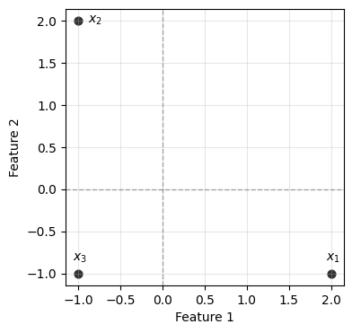
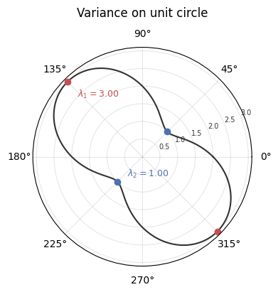
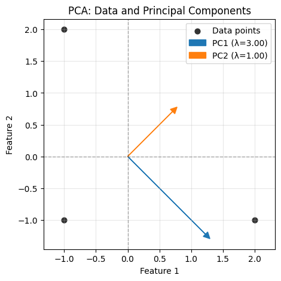
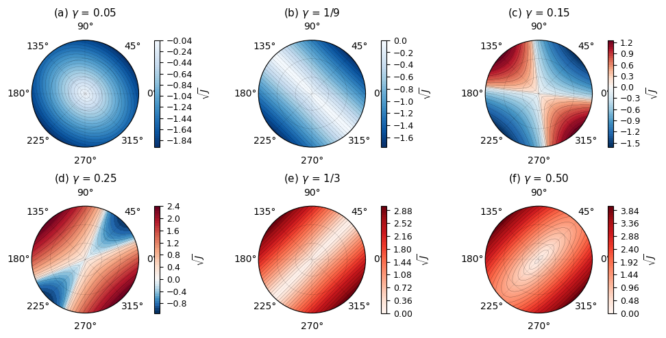

Part 2 of 4 · Primal Attention Series
Part 1 derived SVD from the classical variational principle: maximizing \(u^T A v\) with hard constraints on both \(u\) and \(v\). Johan Suykens’ LS-SVM reformulation replaces rigid constraints with competing forces.
Before tackling SVD in this new framework, we start with PCA: the simplest setting where two opposing terms (variance and regularization) find balance at discrete, quantized points. The intuition we build here, especially through a toy example with its revealing polar landscapes, carries directly into the SVD case.
Classical PCA begins with a single question: which direction captures the most variance?
Classical PCA: The Hard Constraint Formulation
Given centered data points \(x_1, \ldots, x_N \in \mathbb{R}^d\), PCA looks for the projection direction \(w \in \mathbb{R}^d\) that maximizes the variance of the projected data:
\[\max_w \text{Var}(w^T x) = \frac{1}{N} \sum_{k=1}^N (w^T x_k)^2\]
subject to \(\|w\|^2 = 1\) (the unit norm constraint).
Each dot product \(w^T x_k\) measures how much data point \(x_k\) aligns with \(w\). Squaring ensures opposite orientations along the same axis contribute equally. The constraint keeps \(w\) from growing arbitrarily large, which would trivially inflate variance.
The goal: find the unit direction that aligns most strongly with the data on average, the main axis of variation in the data cloud.
From Sums to Covariance
The sum \(\frac{1}{N} \sum_{k=1}^N (w^T x_k)^2\) can be written more compactly. To see how, we’ll work with three points in 2D throughout: \[x_1 = \begin{bmatrix} 2 \\ -1 \end{bmatrix}, \quad x_2 = \begin{bmatrix} -1 \\ 2 \end{bmatrix}, \quad x_3 = \begin{bmatrix} -1 \\ -1 \end{bmatrix}\]
This sum of squared projections can be rewritten as \(w^T C w\), where: \[C = \frac{1}{N} \sum_{k=1}^N x_k x_k^T\] is the sample covariance matrix of our data. The constraint remains \(w^T w = 1\).
Where does the covariance C come from?
Let’s verify that the sum \(\frac{1}{N}\sum_k (w^T x_k)^2\) really equals \(w^T C w\).
Since \(w^T x_k\) is a scalar (a single number), it equals its own transpose: \(w^T x_k = (w^T x_k)^T\). This lets us write:
\[(w^T x_k)^2 = (w^T x_k) \cdot (w^T x_k) = (w^T x_k) \cdot (w^T x_k)^T\]
\[(w^T x_k)^2 = w^T x_k x_k^T w\]
Now sum over all points and divide by \(N\):
\[\frac{1}{N}\sum_{k=1}^N (w^T x_k)^2 = \frac{1}{N}\sum_{k=1}^N w^T x_k x_k^T w\]
Since \(w\) doesn’t depend on \(k\), it factors out of the sum:
\[= w^T \left(\frac{1}{N}\sum_{k=1}^N x_k x_k^T\right) w = w^T C w\]
For our toy example, \(C = \frac{1}{3}(x_1 x_1^T + x_2 x_2^T + x_3 x_3^T)\).
Computing each outer product:
\[x_1 x_1^T = \begin{bmatrix} 2 \\ -1 \end{bmatrix} \begin{bmatrix} 2 & -1 \end{bmatrix} = \begin{bmatrix} 4 & -2 \\ -2 & 1 \end{bmatrix}\]
\[x_2 x_2^T = \begin{bmatrix} -1 \\ 2 \end{bmatrix} \begin{bmatrix} -1 & 2 \end{bmatrix} = \begin{bmatrix} 1 & -2 \\ -2 & 4 \end{bmatrix}\]
\[x_3 x_3^T = \begin{bmatrix} -1 \\ -1 \end{bmatrix} \begin{bmatrix} -1 & -1 \end{bmatrix} = \begin{bmatrix} 1 & 1 \\ 1 & 1 \end{bmatrix}\]
Adding them up: \[C = \frac{1}{3}\begin{bmatrix} 6 & -3 \\ -3 & 6 \end{bmatrix} = \begin{bmatrix} 2 & -1 \\ -1 & 2 \end{bmatrix}\]
Notice: \(C_{11} = 2\) is the variance of the first coordinate, \(C_{22} = 2\) is the variance of the second coordinate, and \(C_{12} = C_{21} = -1\) is their covariance.
Writing variance as \(w^T C w\) replaces the \(N\) data points with a single \(d \times d\) matrix. The problem becomes: maximize a quadratic form (\(w^T C w\), quadratic in \(w\)) under a quadratic constraint (\(w^T w = 1\)). This kind of problem has an exact solution.
Solving the Constrained Optimization
To maximize \(w^T C w\) subject to \(\|w\|^2 = 1\), we use the method of Lagrange multipliers. (If this technique is unfamiliar, we introduced it in Part 1.)
The Lagrangian is:
\[\mathcal{L}(w, \lambda) = w^T C w - \lambda(w^T w - 1)\]
Taking the derivative with respect to \(w\) and setting it to zero:
\[\frac{\partial \mathcal{L}}{\partial w} = 2Cw - 2\lambda w = 0\]
This gives the eigenvalue problem \(Cw = \lambda w\) (the canonical equation \(Ax = \lambda x\)). Since \(C\) is symmetric, it has exactly \(d\) eigenpairs \((\lambda_i, w_i)\), one per dimension. A single optimization problem yields the entire eigenspectrum: the first principal component is the eigenvector with the largest \(\lambda_i\); the others follow in order.
Stationary points, critical points, and a note on non-convexity
Setting \(\frac{\partial \mathcal{L}}{\partial w} = 0\) finds stationary points of the Lagrangian: points where the gradient vanishes. These are also called critical points; the two terms mean the same thing. Stationary points include maxima, minima, and saddle points.
A note on vocabulary: in deep learning, “non-convex” usually flags the presence of many local optima. Here it means something more specific: the constraint \(w^T w = 1\) defines a unit circle, a non-convex set. That geometry allows the objective to have a maximum, a minimum, rather than a unique solution.
The Variance Landscape
We can see all these stationary points at once. Since \(w\) must have unit norm, in 2D we can write \(w = (\cos\theta, \sin\theta)\) for some angle \(\theta\). This traces out the unit circle, letting us plot variance as a single curve in polar coordinates.

The curve bulges where variance is high, pinches where it’s low. \(w\) and \(-w\) define the same axis, so they give identical variance: hence the two-fold symmetry.
The maxima (red dots) mark the first principal component at \(\lambda_1 = 3\). The minima (blue dots), perpendicular, mark the second at \(\lambda_2 = 1\). The eigenvectors sit at the peaks and troughs of this polar plot.
import numpy as np
# Our toy data
X = np.array([
[2, -1],
[-1, 2],
[-1, -1]
])
# Covariance matrix
C = X.T @ X / len(X)
print("Covariance matrix C:")
print(C)
# Eigenvalue decomposition
eigenvalues, eigenvectors = np.linalg.eig(C)
print(f"\nEigenvalues: {eigenvalues}")
print(f"\nEigenvectors (as columns):")
print(eigenvectors)
# Verify: the maximum variance is the largest eigenvalue
print(f"\nMaximum variance: {eigenvalues.max():.4f}")
print(f"Corresponding direction: {eigenvectors[:, eigenvalues.argmax()]}")Covariance matrix C:
[[ 2. -1.]
[-1. 2.]]
Eigenvalues: [3. 1.]
Eigenvectors (as columns):
[[ 0.70710678 0.70710678]
[-0.70710678 0.70710678]]
Maximum variance: 3.0000
Corresponding direction: [ 0.70710678 -0.70710678]
The hard constraint \(\|w\|^2 = 1\) locks the search to the unit circle. The eigenvectors mark the peaks and troughs of variance along that circle, but no exploration off it is possible: the norm is fixed at exactly 1.
Instead of demanding \(\|w\|^2 = 1\), we could penalize large \(\|w\|\): maximize variance, but pay a cost for growing \(w\). The rigid constraint becomes a competing force.
This is the LS-SVM reformulation. The eigenvalue structure still emerges, but from the balance between two opposing terms.
The LS-SVM Reformulation: From Hard Constraints to Competing Forces
Instead of enforcing unit norm as a hard constraint, this reformulation introduces a competing term. One term pushes for higher variance, the other resists large norms. The solution sits at the equilibrium between them.
A word on LS-SVM
Classical SVM separates positive and negative points with a margin: a buffer zone no point should enter.
Perfect separation is rare, so the soft margin variant lets some points violate the zone, penalized by slack variables. But inequality constraints remain (each point must be on one side or the other), solved via Quadratic Programming, which doesn’t scale well.
Suykens’ insight: if we’re allowing violations anyway, why keep the inequalities? Replace them with equalities, where the margin boundaries become target values. Points can miss the target, and we penalize the squared error.
KKT (Karush-Kuhn-Tucker) conditions reduce to a linear system. Fast to solve, easy to extend. The “Least Squares” in LS-SVM comes from this squared error formulation.
For a full treatment, see Suykens et al., Least Squares Support Vector Machines (World Scientific, 2002).
The LS-SVM formulation for PCA replaces the hard norm constraint with two competing forces:
\[\max_{w,e} J_P(w, e) = \frac{\gamma}{2} \sum_{k=1}^N e_k^2 - \frac{1}{2} w^T w \quad \text{subject to } e_k = w^T x_k\]
The two terms pull in opposite directions:
- \(\frac{\gamma}{2} \sum_{k=1}^N e_k^2\): Maximize the squared projections. This wants \(w\) to capture as much variance as possible.
- \(-\frac{1}{2} w^T w\): Penalize large \(w\). This pulls \(w\) back toward zero.
These forces oppose each other. Without regularization, we’d just scale \(w\) to infinity. Without the variance term, \(w\) would collapse to zero. The parameter \(\gamma\) controls the balance.
Why introduce \(e_k\) as separate variables?
The constraints \(e_k = w^T x_k\) look like definitions, not restrictions. We could just substitute \(e_k\) directly.
But by promoting the projections \(e_k\) to variables and enforcing them as equality constraints, we gain access to the Lagrangian framework. Each constraint brings a Lagrange multiplier \(\alpha_k\), and these \(\alpha_k\) will become the key players in the dual formulation.
From Lagrangian to KKT Conditions
The Lagrangian introduces a multiplier \(\alpha_k\) for each constraint:
\[\mathcal{L}(w, e; \alpha) = \frac{\gamma}{2} \sum_{k=1}^N e_k^2 - \frac{1}{2} w^T w - \sum_{k=1}^N \alpha_k (e_k - w^T x_k)\]
Setting partial derivatives to zero gives the KKT conditions:
\[ \begin{aligned} \frac{\partial \mathcal{L}}{\partial w} = 0 \quad &\Rightarrow \quad w = \sum_{k=1}^N \alpha_k x_k && (1) \\ \frac{\partial \mathcal{L}}{\partial e_k} = 0 \quad &\Rightarrow \quad \alpha_k = \gamma e_k && (2) \\ \frac{\partial \mathcal{L}}{\partial \alpha_k} = 0 \quad &\Rightarrow \quad e_k = w^T x_k && (3) \end{aligned} \]
What these conditions tell us:
- \(w\) is a linear combination of the data points (weighted by \(\alpha_k\))
- The multipliers \(\alpha_k\) are proportional to the projections \(e_k\)
- The constraints hold exactly
From KKT to the Eigenvalue Problem
Now we substitute to eliminate \(w\) and \(e\). From condition 1, \(w = \sum_k \alpha_k x_k\).
Since \(k\) is already taken as the point index in condition 3, we relabel the sum: \[w = \sum_j \alpha_j x_j = X^T \alpha\]
Plugging into condition 3:
\[e_k = w^T x_k = \left(\sum_j \alpha_j x_j\right)^T x_k = \sum_j \alpha_j (x_j^T x_k)\]
In matrix form: \(e = X X^T \alpha = \Omega \alpha\), where \(\Omega\) with entries \(\Omega_{jk} = x_j^T x_k\) collects all pairwise dot products: the Gram matrix of the data. In kernel methods, this is called the kernel matrix, here for the linear kernel \(k(x_j, x_k) = x_j^T x_k\). Swapping in a nonlinear kernel changes what “similarity” means; we’ll do exactly that below.
From condition 2, \(e_k = \alpha_k / \gamma\), so \(e = \alpha / \gamma\).
Combining:
\[\frac{1}{\gamma} \alpha = \Omega \alpha\]
Or equivalently:
\[\Omega \alpha = \lambda \alpha \quad \text{where } \lambda = \frac{1}{\gamma}\]
Solutions only exist when \(\gamma = 1/\lambda_i\) for some eigenvalue \(\lambda_i\) of \(\Omega\). These are the “quantized” values of \(\gamma\) where the competing forces find equilibrium.
Notation: two meanings of λ
In the classical PCA section, \(\lambda_i\) denotes the eigenvalues of the covariance matrix \(C = \frac{1}{N}X^TX\). Here, \(\lambda_i\) denotes the eigenvalues of the Gram matrix \(\Omega = XX^T\). These differ by a factor of \(N\): \(\lambda_i^{\Omega} = N\,\lambda_i^{C}\). We keep \(\lambda\) in both cases to match the standard references for each formulation.
Visualizing the Objective Landscape
The derivation landed on a sharp conclusion: equilibrium only exists at discrete values \(\gamma = 1/\lambda_i\). At other values of \(\gamma\), the two forces don’t balance at any nonzero \(w\).
What does this look like geometrically? Our toy example has \(w \in \mathbb{R}^2\), so we can plot the full objective
\[J(w) = \frac{\gamma}{2} \sum_{k=1}^N (w^T x_k)^2 - \frac{1}{2} w^T w\]
over all candidate \(w\) vectors, sweeping both direction (angle) and magnitude (norm), and watch the landscape change as \(\gamma\) passes through those critical values.

What do we observe?
- (a) \(\gamma\) = 0.05: Regularization dominates. The objective decreases outward everywhere: maximum at w = 0. The objective is concave.
- (b) \(\gamma\) = 1/9: First critical value. A ridge emerges along one direction: flat radially, curving down elsewhere.
- (c,d) Between critical values: A saddle at the origin. The objective curves upward in some directions and downward in others.
- (e) \(\gamma\) = 1/3: Second critical value. A thalweg (valley floor) emerges along a perpendicular direction: flat radially, curving up elsewhere.
- (f) \(\gamma\) = 0.50: Variance dominates. The objective increases outward everywhere: minimum at w = 0. The objective is convex.
Only at \(\gamma = 1/\lambda_i\) do non-trivial equilibria exist. At these critical values, variance and regularization exactly balance, and the objective along the balanced direction is zero.
Maximization vs. equilibrium
But wait, we’re maximizing, yet (e) looks like a valley? The resolution: the Lagrangian finds stationary points, not specifically maxima. If we had minimized instead, the KKT conditions would yield the same critical γ values. The formulation is really about equilibrium between competing forces, not optimization direction.
Direction vs. magnitude
The eigenvalue problem \(\Omega\alpha = \lambda\alpha\) fixes the direction of \(\alpha\) but not its length: if \(\alpha\) is a solution, so is \(c\alpha\) for any scalar \(c\). Since \(w = X^T\alpha\), that freedom passes directly to \(w\). This is the radial flatness visible in the ridge and thalweg. In practice, a normalization convention on \(\alpha\) pins a specific \(w\).
Looking ahead
At each critical \(\gamma = 1/\lambda_i\), the two forces balance and the objective along the eigenvector direction is exactly zero. Suykens (2023) proves the same zero-value property for a kernel SVD formulation of self-attention: the stationary solution to the KSVD optimization in Primal-Attention “yields a zero-value objective.” The competing-forces framework we built here for PCA carries directly into that setting.
Why \(\gamma\) Controls the Landscape
The landscape’s transitions from concave to saddle to convex have a clean algebraic explanation. Substituting \(e_k = w^T x_k\) directly into the objective gives a quadratic form:
\[J(w) = w^T \left(\frac{\gamma}{2} X^T X - \frac{1}{2} I\right) w\]
Deriving the quadratic form
Starting from the objective:
\[J(w) = \frac{\gamma}{2} \sum_{k=1}^N (w^T x_k)^2 - \frac{1}{2} w^T w\]
We showed earlier that \(\sum_k (w^T x_k)^2 = w^T \left(\sum_k x_k x_k^T\right) w = w^T X^T X\, w\). Note that this relates to our covariance matrix: \(C = \frac{1}{N} X^T X\), so \(X^T X = NC\).
Substituting:
\[J(w) = \frac{\gamma}{2} w^T X^T X\, w - \frac{1}{2} w^T w = w^T \left(\frac{\gamma}{2} X^T X - \frac{1}{2} I\right) w\]
The Hessian of \(w^T A w\) is \(2A\), giving us \(H = \gamma X^T X - I\).
The Hessian (introduced in Part 1) is:
\[H = \gamma X^T X - I\]
Its eigenvalues are \(\gamma \lambda_i - 1\), where \(\lambda_i\) are the eigenvalues of \(X^T X\). The sign determines curvature:
| \(\gamma\) range | Hessian eigenvalues | Shape |
|---|---|---|
| \(\gamma < 1/\lambda_1\) | both negative | negative definite (concave) |
| \(\gamma = 1/\lambda_1\) | one zero, one negative | negative semi-definite (ridge) |
| \(1/\lambda_1 < \gamma < 1/\lambda_2\) | one positive, one negative | indefinite (saddle) |
| \(\gamma = 1/\lambda_2\) | one positive, one zero | positive semi-definite (thalweg) |
| \(\gamma > 1/\lambda_2\) | both positive | positive definite (convex) |
The parameter \(\gamma\) smoothly transitions the objective through all these regimes. The critical values \(\gamma = 1/\lambda_i\) are where the Hessian becomes singular, creating those ridges and thalwegs that extend to infinity.
In classical PCA, the quadratic form \(w^T C w\) is positive semi-definite: variance is never negative, and the hard constraint \(\|w\|^2 = 1\) simply selects a point on the unit circle. The geometry is fixed.
The LS-SVM formulation replaces that rigid constraint with a “tunable knob” γ. The effective quadratic form becomes \(w^T(\frac{\gamma}{2} X^T X - \frac{1}{2}I)w\), whose curvature now depends on γ. Too small, and regularization dominates: the objective is concave, everything collapses to \(w = 0\). Too large, and variance dominates: the objective is convex, \(w\) escapes to infinity. Both extremes are useless.
But at the critical values \(\gamma = 1/\lambda_i\), the two forces exactly balance along one direction. A ridge or thalweg appears, extending to infinity, flat radially, curving away on either side. These semi-definite directions are the only ones where the competing forces reach equilibrium. They point exactly along the eigenvectors.
From Linear to Nonlinear: The Kernel Trick
Look back at the dual eigenvalue problem we derived: \(\Omega \alpha = \lambda \alpha\), where \(\Omega_{ij} = x_i^T x_j\). The data points only appear through their pairwise dot products. The weight vector \(w\) has been eliminated entirely.
This is not an accident. It’s a direct consequence of KKT condition (1): \(w = X^T \alpha\), which expresses \(w\) as a linear combination of the data. Once \(w\) is written this way, every equation collapses to dot products. And dot products are already a kernel: the linear kernel.
The linear kernel \(K(x_i, x_j) = x_i^T x_j\) is just one choice. We can replace it with any positive definite kernel function, which guarantees the eigenvalue problem remains well-behaved. Common choices include:
- RBF kernel: \(K(x_i, x_j) = \exp(-\sigma \|x_i - x_j\|^2)\)
- Polynomial kernel: \(K(x_i, x_j) = (x_i^T x_j + c)^d\)
The math stays identical: solve \(K \alpha = \lambda \alpha\) instead of \(\Omega \alpha = \lambda \alpha\). But now we’re finding principal components in a transformed feature space, without ever computing the transformation explicitly.
Note that these kernels are symmetric: \(K(x_i, x_j) = K(x_j, x_i)\). When we tackle SVD in Part 3, this symmetry will break, opening the door to attention mechanisms.
What’s Next
We’ve seen how a small shift in perspective, from hard constraints to competing forces, reveals rich geometry hiding beneath PCA. Ridges, thalwegs, quantized equilibria, and a zero-value objective at balance.
The kernel formulation adds another dimension to this story. Linear PCA can only find flat subspaces; if structure in the data is curved, the principal components slice right through it. Nonlinear kernels let the same eigenvalue machinery operate on richer representations, without ever computing the mapping explicitly. This matters for what comes next.
In Part 3, we apply the LS-SVM lens to SVD. There, instead of one data source, we have two: rows and columns of a matrix, each with its own feature map. The kernel becomes asymmetric. This is the path from SVD revisited through asymmetric kernels to the attention layer seen through LS-SVM lenses.
The competing forces we’ve learned to read in polar landscapes? They’ll guide us there too.